Logo "De route": de M als leerroute door zeshoek-knooppunten — open begin en eind, gevulde stappen onderweg. Kleur: #9747ff (paars). Gebruik de kleine versie onder 32px.
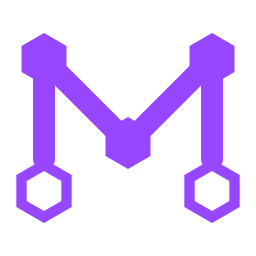
minor-logo.svgminor-logo.svg
minor-logo-white.svg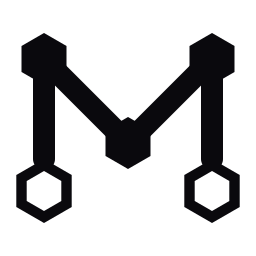
minor-logo-black.svg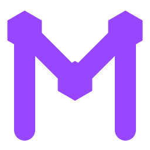
minor-logo-small.svgminor-logo-small-white.svgEén stijl voor alle games: omtreklijnen op een raster van 256, lijndikte 18, ronde uiteinden. Op de site staan ze in games/emblems/ (currentColor); hier als losse witte en zwarte bestanden.
emblems/html-hunter-white.svg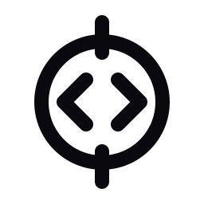
emblems/html-hunter-black.svg
emblems/build-the-dom-white.svg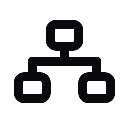
emblems/build-the-dom-black.svgemblems/style-lab-white.svg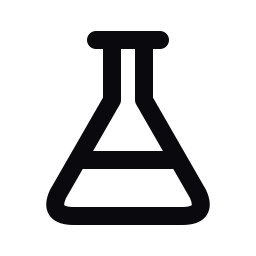
emblems/style-lab-black.svgemblems/layout-builder-white.svgemblems/layout-builder-black.svg
emblems/bug-hunter-white.svg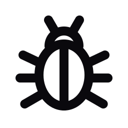
emblems/bug-hunter-black.svgemblems/code-detective-white.svgemblems/code-detective-black.svgemblems/code-review-white.svgemblems/code-review-black.svgemblems/website-challenge-white.svgemblems/website-challenge-black.svg